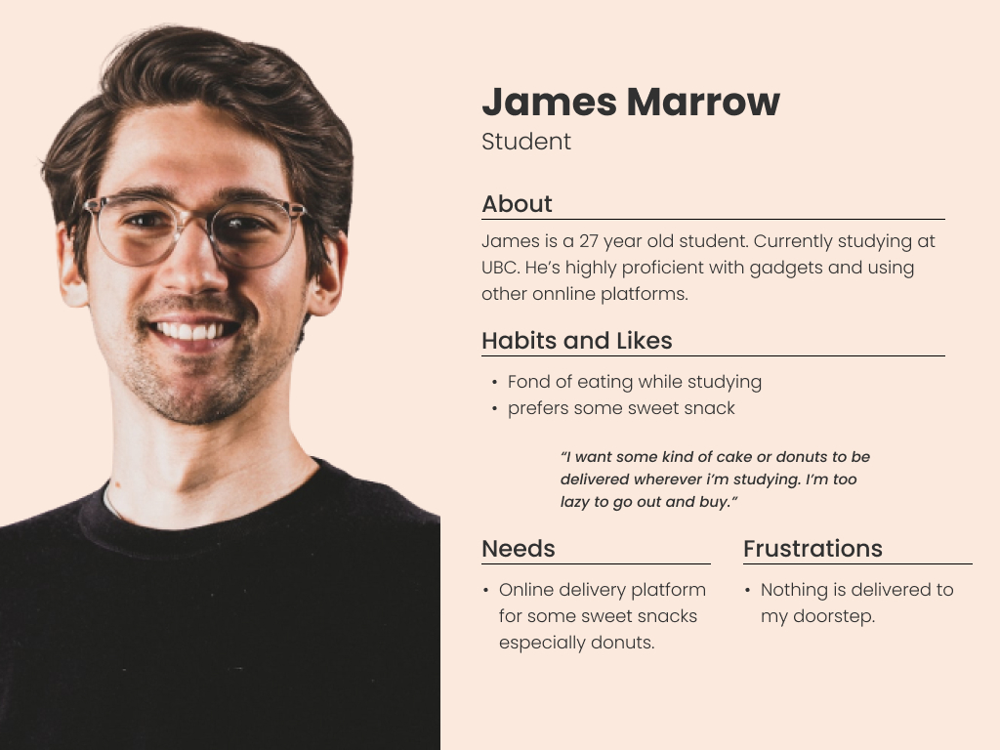
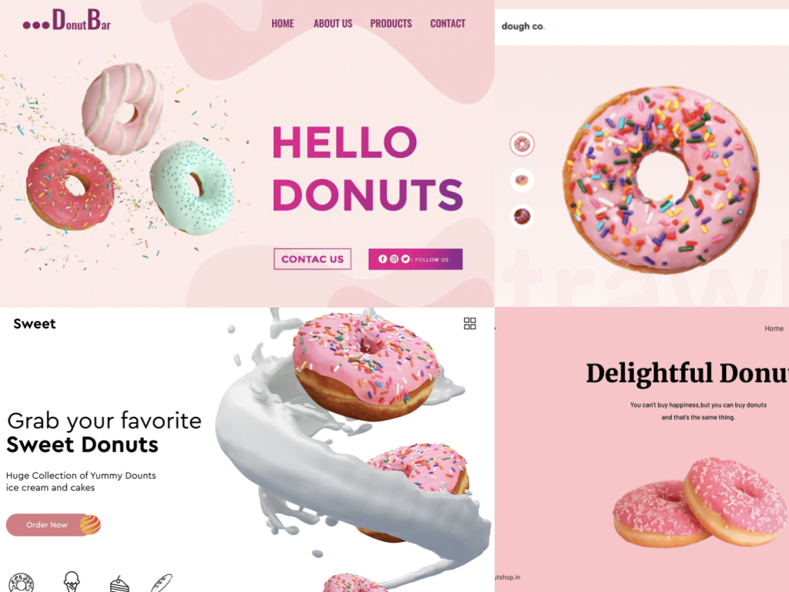
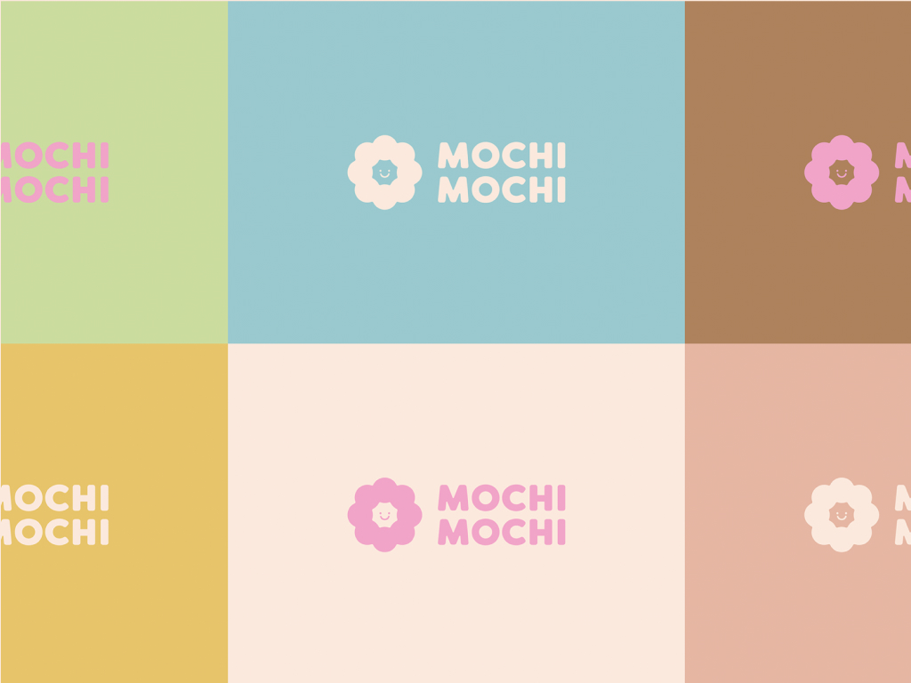
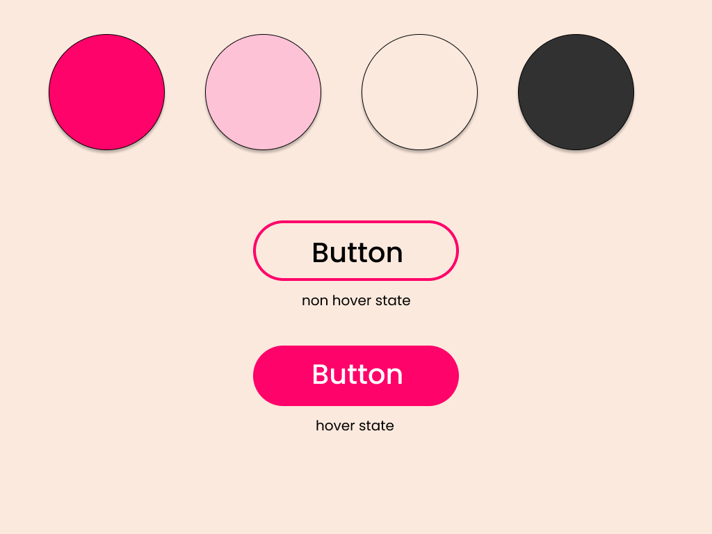
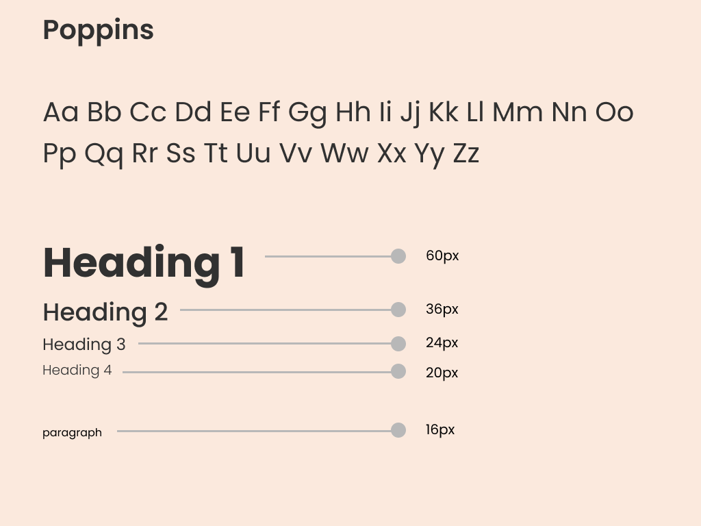

I conducted user research to gain a better understanding of the habits and frustrations for my user.
I wanted to keep colours to be minimal and aesthetic as it is a local donut shop serving with intense taste of mochi.
Different color variations of logo.
Colours are minimal no high gradients colours are used. I chose this to have more aesthetic feel. Button corners are round as it is pschologically proved to have the corners round so that user have a decent experience.
Type is Poppins to have a soft and subtle look of the website.
